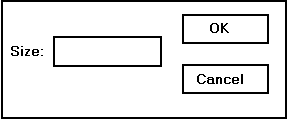

Understanding the
AppWizard and ClassWizard in Visual C++ Version 6.x
by Marshall Brain
Creating
a Simple Drawing Editor
Probably the
best way to understand the document and view classes, as well
as the ClassWizard and resource editors, is to run through a simple
example application that makes use of all of these features in
straightforward ways. In this tutorial we will use the AppWizard
framework that you generated in the previous tutorial. As you
recall, we modified it so that you could draw small rectangles
using the mouse. However, it has no way to load or save the "drawings",
nor can it refresh the screen on exposure. In this tutorial we
will solve these problems using the Document/View paradigm. We
will also add a new menu option and dialog to the application
to demonstrate simple uses of the resource editors.
Start with the "samp" application framework that you created in tutorial 3. In order to turn this framework into a complete application we must take the following steps:
Altogether, we will have to write only about 15 lines of code to accomplish all of this.
The following instructions walk you through these different steps.
MFC contains a variety of different collection classes, and by using them we can very easily add a robust data structure to hold the points that the user draws. Look up the collection classes in the MFC help file by choosing the Search option in the Help menu, and then typing "hierarchy chart". There should be a category toward the right of the chart with Arrays, Lists and Maps. These are the collection classes.
In this application we need to store the points drawn by the user. This is most easily done using a pair of CDWordArrays. These are simple array classes that store values of type DWORD (a DWORD being a 32-bit signed integer), and we will store the x value of each point in one of the arrays and the y value of each point in the other. Click on the CDwordArray class in the hierarchy chart to learn more about the class. The MFC array classes have a number of useful features that will make our lives easier: The MFC arrays automatically size themselves as new elements are added and give you virtually infinite room, they do range checking in debug mode, and they know how to read and write themselves to disk.
Open the SAMPDOC.H file (probably the easiest way to do this is to double click on the CSampDoc class in the ClassView seen in tutorial 3, or go to the FileView and double click on SAMPDOC.H in the Header Files folder) and find the public attributes section. There will be a section labeled "//attributes" with a "public:" marker within it. In that position type:
CDWordArray x, y;
If you then save the header file, the ClassView of the project window will display the two new variables in the CSampDoc class.
As an alternative, you can use the tools. Right-click on CSampDoc in the ClassView, and then choose Add Member Variable... from the list. You will have to do this twice, once for x and once for y. Both variables will be added to the public implementation section of the header file, and you can watch it happen if you have the header file open. For now, put x and y in the attributes section.
In this simple example we will treat the arrays as public members to make things more obvious, but in a real application it would be beneficial to make the data structure private and provide new member functions in the document class to allow the manipulation of the data structure. These functions would allow for the complete encapsulation of the document class.
The AppWizard framework and the MFC classes do a good bit of the work related to loading and saving files to disk. For example, when you choose the Open option of the File menu in your drawing program, it already pulls up the proper File Open dialog. The framework then takes the file name selected by the user, opens it, creates a binary "archive" and attaches it to that file, calls several functions in the CDocument class, and finally calls a function named Serialize in the CSampDoc class, passing it the archive (to see all of this code in action, finish adding the code described in this tutorial and put a break point in the document's Serialize function, run the program under the debugger, choose File Open, and then, when the program stops, choose the Call Stack option in the View menu. You will be able to examine the MFC source code). This same Serialize function is also called when it is time to save the file. All that you have to do is fill in this function and your data structure will automatically be loaded and saved to disk. To make matters even easier, the CDWordArray class (and all other MFC collection classes) know how to serialize themselves.
Find the Serialize function in the CSampDoc class. The easiest was to do this is to open the ClassView, click on plus sign next to CSampDoc, and then double click on the Serialize function. Change it so that it looks like this:
void CSampDoc::Serialize(CArchive& ar)
{
x.Serialize(ar);
y.Serialize(ar);
}
The x and y variables will handle all details of serialization, including understanding whether they should load or save themselves to the archive. The archive knows which direction the data should move.
First we will add a member variable to the view class to store the size of the rectangles that the editor draws, rather than using the hard-coded value of 5 as in tutorial 3. We will then later add a dialog that lets us change this value in order to demonstrate the addition of dialogs. Open SAMPVIEW.H and find the public attributes section. Add the following declaration:
int w;
Note that in this same section the view has a member function named GetDocument that returns a pointer back to the view's document. This function will be important in a moment.
Now find the constructor for the CSampView class (you can double-click on it in the ClassView and add the following line to initialize the new member:
w = 5;
In the CSampView class, find the OnMouseMove function that you added in tutorial 3 (you can find it by hand in SAMPVIEW.CPP, or use the ClassView). Change the function so that it looks like this:
void CSampView::OnMouseMove(UINT nFlags, CPoint point)
{
CSampDoc* pDoc = GetDocument();
ASSERT_VALID(pDoc);
if (nFlags == MK_LBUTTON)
{
CClientDC dc(this);
dc.Rectangle(point.x, point.y,
point.x+w, point.y+w);
pDoc->x.Add(point.x);
pDoc->y.Add(point.y);
pDoc->SetModifiedFlag();
}
CView::OnMouseMove(nFlags, point);
}
Look up OnMouseMove in the MFC help file for information on its parameters. The easiest way to do this is to select Search in the Help menu and type OnMouseMove.
The function has been modified so that it retrieves a pointer to the view's document and then saves the current point in the document's x and y members. The function also calls the document's SetModifiedFlag function (see the MFC help file) to set the document's dirty bit. Once set, the document will automatically query the user about saving the file if the user attempts to close it or quit without saving. This function also makes use of the new w member in the view.
Whenever the view class receives an exposure (WM_PAINT) event, it calls the OnDraw member function. This function also is called to handle printing. By putting exposure-handling code into this function you can complete the application. Find the OnDraw function in the CSampView class. Modify it as shown below:
void CSampView::OnDraw(CDC* pDC)
{
CSampDoc* pDoc = GetDocument();
ASSERT_VALID(pDoc);
int i;
for (i=0; i<pDoc->x.GetSize(); i++)
pDC->Rectangle(pDoc->x[i],
pDoc->y[i],
pDoc->x[i]+w,
pDoc->y[i]+w);
}
This function simply asks one of the arrays how many elements it contains and then runs through a for loop that many times, drawing all of the points that the user has previously entered.
Compile and run the application. You will find that it properly handles exposure events, and that it can now load and save files to disk. You have properly modified the document and view classes to create a complete, fully functional drawing editor. Congratulations!
Note that, as described in tutorial 3, the document class holds the data structure and loads and saves the data to disk. The view class uses the data in the document to handle redrawing, and manipulates the data when the user moves the mouse. This is proper use of the document and view classes.
It would not be a bad idea to now stop, close this tutorial, and try to recreate the application "blind". You will find that you generate a number of questions when you try to do it without help, and those questions can teach you a lot.
What we would like to do now is add a new menu option and dialog to the application so that the user can modify the size of the rectangles that the application draws. This exercise will show you how easy it is to modify the menu and create new dialog resources.
In the application's workspace window choose the ResourceView tab and double click on the Menu resource section. You will find that the application has two menus. Double click on both and look at them. IDR_MAINFRAME is short, and is used when there are no windows open in the MDI framework. IDR_SAMPTYPE is longer and appears when windows are open. We want to modify IDR_SAMPTYPE, so open it by double clicking on it.
At the end of the menu bar you will find an empty rectangle. Click on it and type "&Option". Press the Return key. The & character indicates which letter in the menu title you want to use as a mnemonic, and will appear underlined when the menu is shown on the screen. You can move the & anywhere within the string. Now a new rectangle will appear below Option. Click on it and type "&Size". Press the Return key. Now click on Option and drag it to a more appropriate place in the menu bar, perhaps between Edit and View. That's all it takes to create a new menu and option.
Now double-click on the new size option. Note that the editor has automatically assigned it the obvious ID of ID_OPTION_SIZE. You can change the ID as you see fit, but there is rarely a reason to do so. We will use this value inside a message map to respond to the new option. [note: If you are unfamiliar with the concept of a message map, visit the MFC Tutorials page and see the introductory MFC tutorial]
Build and execute the application. You will find that it has a new menu option but that the option is disabled.
Now open the ClassWizard by choosing the ClassWizard option in the View menu. Make sure the Message Maps tab is visible. Make sure the CSampView class is selected. In the Object IDs list choose ID_OPTION_SIZE. In the Messages list choose COMMAND (UPDATE_COMMAND_UI is used primarily to enable and disable the menu options - look up CCmdUI in the MFC help file for more information). Click the Add Function button. The ClassWizard will pick the obvious name OnOptionsSize for the new function and show it to you. Click OK to accept the name. Click the Edit Code button with the OnOptionsSize function selected and modify the function as shown below:
void CSampView::OnOptionsSize()
{
Beep(500, 500);
}
Build and execute the application. Now when you choose the Size option you will find that the application beeps. You can see that it is trivial to wire new menu options into an AppWizard application.
| Visualizing Class Hierarchies |
|---|
|
One of the most frusterating things
when you are first learning MFC is the "Where am I?"
feeling you get. MFC has hundreds of classes, and the
AppWizard adds several more. A good way to get around this feeling
is to use a class hierarchy visualization tool like CodeVizor.
With CodeVizor you can drag the source code for MFC into the
CodeVizor tool and in about 30 seconds have a beautiful, clickable
(and printable!) class hierarchy chart. You can even color classes
individually or in groups so that they stand out! The trial version is free, so get CodeVizor and see how much easier undestanding class hierarchies becomes! |
To add a new dialog to the application we have to do four things:
Here are the steps:
Select the Resource... option from the Insert menu. Choose Dialog and click on New. You should see a new dialog containing OK and Cancel buttons, and a small palette of tools should also appear. If the palette is not in evidence, choose the Customize option in the Tools menu and check the box marked Controls. One button on the palette says "Aa" and is used to create static text controls. Another is labeled "ab|" and is used to create editable text controls. Create a dialog that looks like this:

Click on the new edit control and press Enter. You will find its ID to be IDC_EDIT1. This is fine here, but in a real dialog you would likely change it to something more meaningful. Select the OK button and note its ID is IDOK. This is normal and you will not want to change it. Right click in the title bar of the new dialog itself and choose the Properties option. Note that the dialog's ID is IDD_DIALOG1. Note also that you can change its title here.
With the dialog still open on the screen, choose the ClassWizard option in the View menu. The ClassWizard will see the new dialog and assume that your desire is to create a new dialog class for it. This class will act as a liaison between the dialog resource and your application, and you will need to create a new dialog class for each dialog that you add to an application (although you will rarely or never touch this class except through the ClassWizard). The first dialog you see lets you specify that you want to create a new dialog class. There are several fields in the new dialog class creation dialog. In the Name field type "CSizeDlg". Make sure that Base Class contains CDialog, that File contains SIZEDLG.CPP, that the Dialog ID field contains the dialog's ID of IDD_DIALOG1, and that OLE Automation is set to None. Click the OK button to create the dialog class. Click the OK button in the ClassWizard to close it.
To try out the new dialog, Find the OnOptionsSize function in the CSampView class. Change it so it appears as below:
void CSampView::OnOptionsSize()
{
CSizeDlg dlg;
dlg.DoModal();
}
Also, be sure to include SIZEDLG.H as the last header file included in SAMPVIEW.CPP.
Build and execute the application and select the size option. You will find that the dialog appears properly and disappears as expected when you click the OK or Cancel buttons.
What we would like to do now is get the value typed by the user into the edit field so that we can modify the view's w member. Select the ClassWizard option in the View menu. Select the Member Variables tab at the top of the ClassWizard. Make sure that Class Name is set to CSizeDlg . We want to add a member variable to the CSizeDlg class to allow us to get the value from the dialog's edit control. In the list, double click on IDC_EDIT1. In the dialog that appears, set the Member Variable Name to "m_size". Set the Category to "Value". Set the Variable Type to UINT. Click the OK button. In the new Minimum Value and Maximum Value fields that appear at the bottom of the ClassWizard type 2 and 50 respectively.
The m_size variable is a DDX variable. DDX=Dialog Data Exchange. This new variable will always contain the value that the user types into the edit control, or you can set it to display a default value to the user. The values you typed for the minimum and maximum are known as DDV values. DDV=Dialog Data Validation. Anything the user types will be checked against these values when the user clicks the dialog's OK button.
Replace the code in OnOptionsSize with the following:
void CSampView::OnOptionsSize()
{
CSizeDlg dlg;
dlg.m_size = w;
if (dlg.DoModal() == IDOK)
w = dlg.m_size;
}
Build and execute the program. You will find that if you change the value in the dialog, the size of the rectangles drawn by the application will change appropriately. The code is simply setting or retrieving the value from the edit control using the m_size variable as its proxy. The value in m_size is copied into the edit control when the dialog appears, and the value in the edit control is copied into m_size when the user clicks the OK button.
You may notice that the edit control does not initially have focus. Fix this by opening the dialog resource and choosing the Tab Order option in the Layout menu. Click on each control in order to establish the tab order.
You may want to store the w value with each point that the user draws. To do this, add a new CDWordArray variable to the document class, serialize it appropriately, and change the view class to set and retrieve this array's values in the same way you change x and y.
In this tutorial you have seen how easy it can be to create and modify a very robust and capable program using the AppWizard, ClassWizard and the resource editors. In the next tutorial we will fix one niggling little problem left in this application.